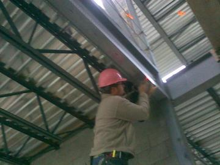
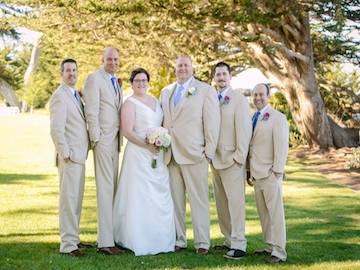
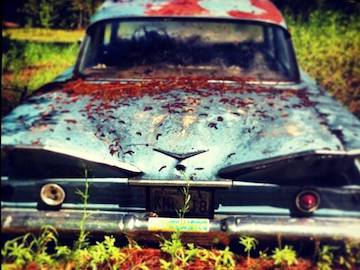
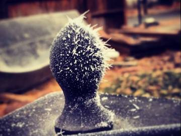
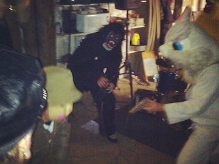
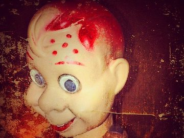
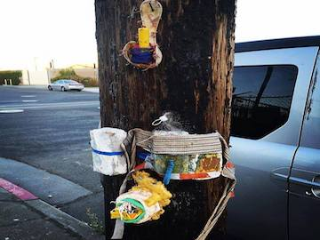
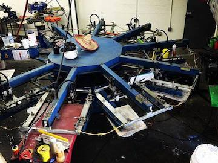
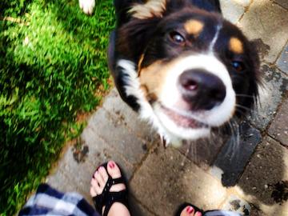
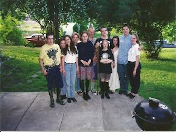

This was a fun excursion to Seattle with the ladies. This was taken in a underground garage so it wasn't a great backdrop but a picture I like, my favorite people.
Forgot my hardhat, everyone thought it was real funny I had to wear a pink hardhat that the general kept for just such occasions. Yep, the hick can shine through in Spokane on a sunny day...

My brother and his bride Dana and the groomsmen. Great location in Monterey, a park next to the ocean, great sunny day with clear skies, couldn't have worked out better! Great memories!!

Matt, Mitch and I drywalled a house up at Five Mile, this beauty was in a field next to the property, pretty cool find

I found this on a cold morning on the back patio. This is the ornament on top of the fire pit in our backyard. I thought the ice crystals looked pretty cool

Secret band in Spokane, WA. Well they are a secret from me anyways, super fun time at Pat's on Halloween

One of Shannon's dolls from antique hunting. Or it's one found in a store, I can't remember...

You have to keep your eyes open, if you don't you might miss these great accidents!
I parked next to this power pole and found these attached to the sidewalk side of the pole. Nice surprise!

-This awesome looking device is the nine color printer at Camputee Press. This was a fast paced, fun, place to work with a great family of co-workers. One of those places that you always remember.

Shannon took this great picture of Turk and his search for constant attention!

Picture at Jesse's with some buddies, not sure why we took the photo?
